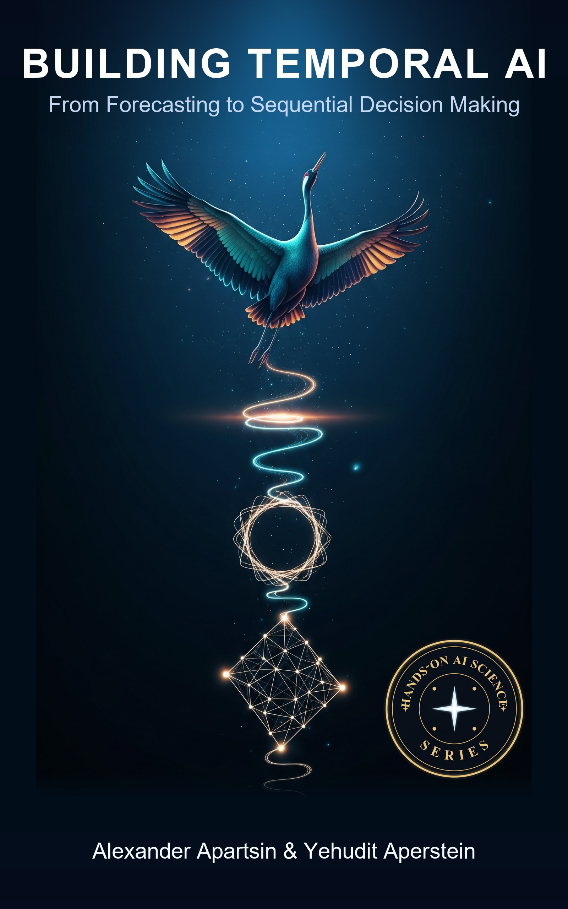

A practitioner's guide to time series, temporal deep learning, foundation models, and sequential decision making.
Time is one of the most fundamental dimensions of intelligence. This book is one connected journey through the theories, models, and engineering practices for systems that understand, predict, and act in dynamic environments. It starts with classical statistical forecasting, builds through temporal deep learning, state-space and continuous-time models, representation learning, and foundation models, then moves into reinforcement learning for sequential decision making, before closing with the trust and deployment concerns that govern real systems.
Each part stands on the one before it; together they span the full reach of Temporal AI, from a single forecast to an agent that plans and acts.
What makes intelligence temporal, the limits of predictability, and the data engineering and leakage discipline every later part depends on.
2 chapters IIStatistical foundations, the frequency domain, univariate and multivariate models, state-space filtering, and anomaly and change-point detection.
6 chapters IIISequence fundamentals, RNNs, TCNs, Transformers, structured state-space and continuous-time models, deep forecasting architectures, and temporal foundation models.
7 chapters IVSelf-supervised and contrastive representations, generative temporal models, and event, point-process, and temporal-graph modeling.
3 chapters VProbabilistic and conformal forecasting, online and continual learning under distribution shift, and adaptive systems that update themselves in production.
3 chapters VIMDPs, POMDPs, bandits and RL foundations, deep and advanced RL, optimal control and imitation, sequences as decisions, and world models and planning.
8 chapters VIITemporal reasoning and causality, temporal AI agents with memory and tool use, and spatio-temporal intelligence across mobility, traffic, and video.
3 chapters VIIIInterpretability, robustness, fairness, and privacy for temporal models, then serving, monitoring, drift alarms, and the MLOps of streaming systems.
2 chapters IXIndustrial applications across finance, healthcare, manufacturing, energy, robotics, science, supply chain, and security, then the road toward general temporal intelligence.
2 chaptersFour habits, kept in every chapter from the first forecast to the last policy.
Every chapter follows one structure: learning objectives, a running example, core exposition, worked examples, a case study, pitfalls, exercises, and further reading. You always know where you are.
After each from-scratch build, a library-shortcut callout shows the same task in a few lines of statsmodels, Nixtla, GluonTS, PyTorch Forecasting, or Stable-Baselines3, and names exactly what the library handles for you.
Each classical idea returns in learned form. The Kalman filter becomes the RNN and the structured state-space model; the HMM becomes a neural latent-variable model and a belief-state agent; the MDP becomes a sequence model. One story, told twice.
A financial returns series, an irregularly sampled clinical series, and an industrial sensor stream recur across the book, so methods are compared on the same data rather than on isolated toy examples.
Building Temporal AI is one of nine connected books, each a deep, build-it-yourself guide to a major field of AI.
Hands-On AI Science is a series of in-depth guides to the major fields of artificial intelligence. Every book goes deep into the theory, models, and internals, covering the classical foundations and the most recent ideas, then shows you how to build each one in Python with the modern libraries and tools that get the job done. The writing stays plain and light (illustrations, analogies, mental models, worked examples, and a little fun) without trading away rigor or coverage. Each volume is self-contained and complete enough to anchor a full course on its subject.
From Forecasting to Sequential Decision Making.
You are hereRead the full About the Hands-On AI Science Series note.